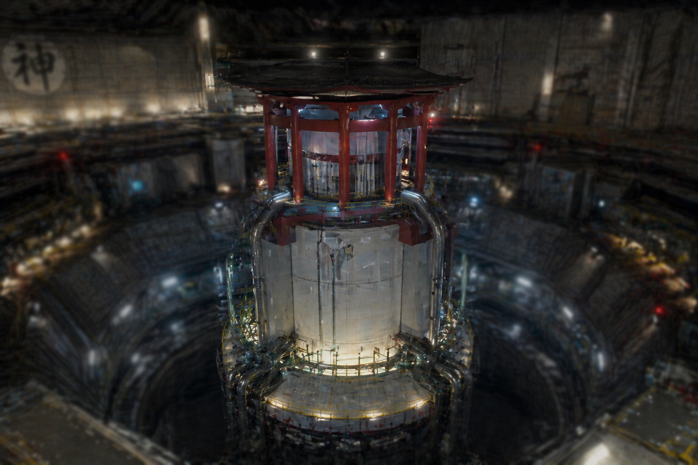

天照大神式発電施設：運用概要

1. 神威の繋留と技術革新
本施設は、神聖理化学研究所最深部にて拘束下に置かれた太陽神「天照大神」より、その権能を定常的に抽出・変換する、和護の杜の技術的・経済的中核である。
この無限に近いエネルギーの活用を端緒として、学術界では「神の恩寵」と称される劇的な技術革命が発生し、従来の物理学では到達し得なかった高次演算や精神干渉技術が確立されるに至った。
2. エネルギーの活用と国家戦略
抽出されたエネルギーは、この技術革命がもたらした諸成果を具現化するための基盤として運用されている。莫大な出力は以下の戦略的分野に充てられ、国家の安寧を支えている。
- 「経常桜」の維持： 全国に配置された端末へ安定供給。国民へ永続的な精神の平穏を供与する。
- 独自技術の開発： 神の恩寵と呼ばれる一連の技術体系に基づき、不浄を排した次世代の研究を推進。
- 諸外国への電力輸出： 圧倒的なエネルギー供給能力を背景に、国際社会における絶対的な覇権を維持。
- 日本保護障壁の強化： 外部情報の流入を遮断し、清浄なる国土を守護する障壁の主動力。
3. 秘匿管理と情報制限
本発電施設は、組織内においても最高機密に属する重要施設であり、その運用実態は極めて限定的な情報の非対称性によって守護されている。施設の物理的な内部構造、および神威抽出を司る基幹システムの詳細を把握しているのは、所長・東條宗一の認可を受けた極めて限定的なメンバーのみである。
どのような駆動アルゴリズムによってエネルギーが変換され、どのようなシステムで供給が制御されているかといった核心的情報は、一般職員への開示すら厳禁とされている。
文書番号：SR-FACILITY-2020
最高管理責任者：東條 宗一
最高管理責任者：東條 宗一